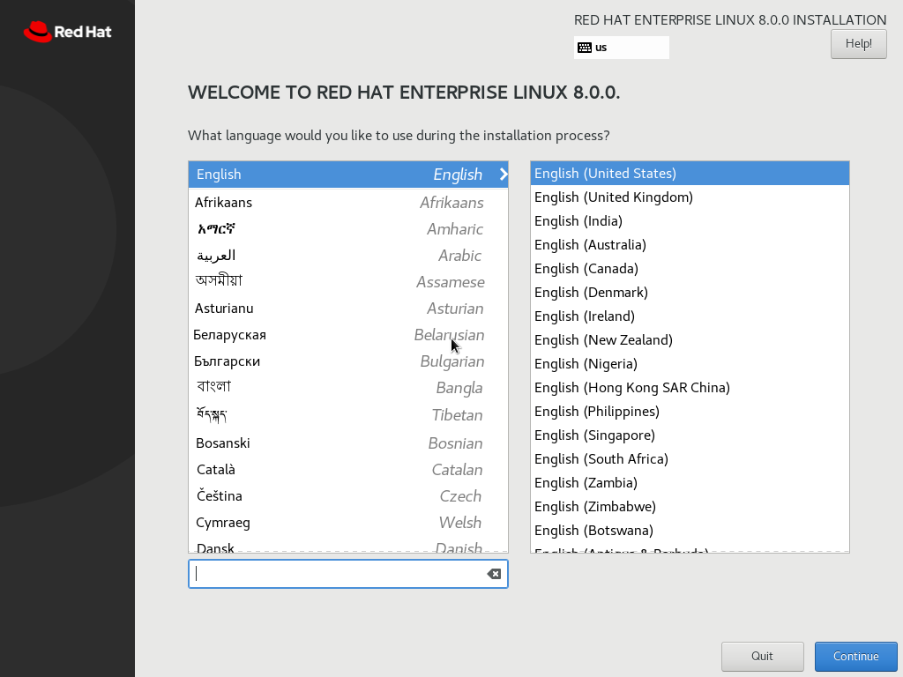
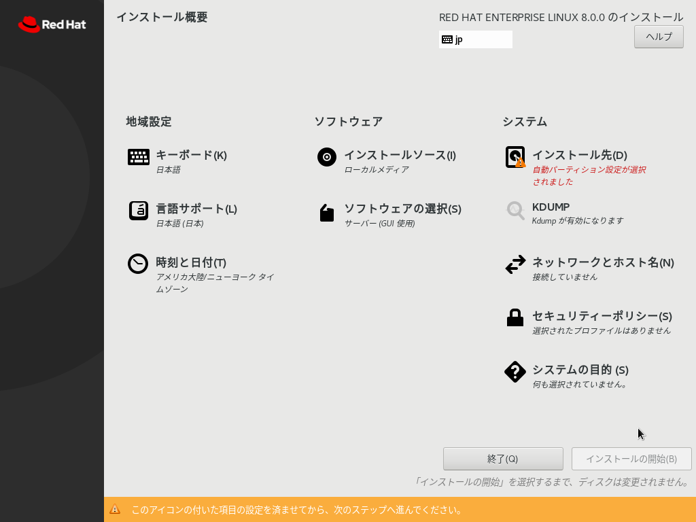
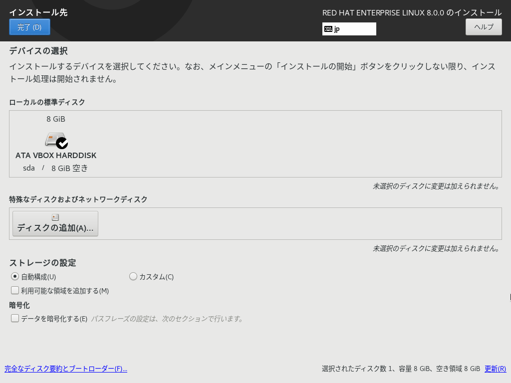
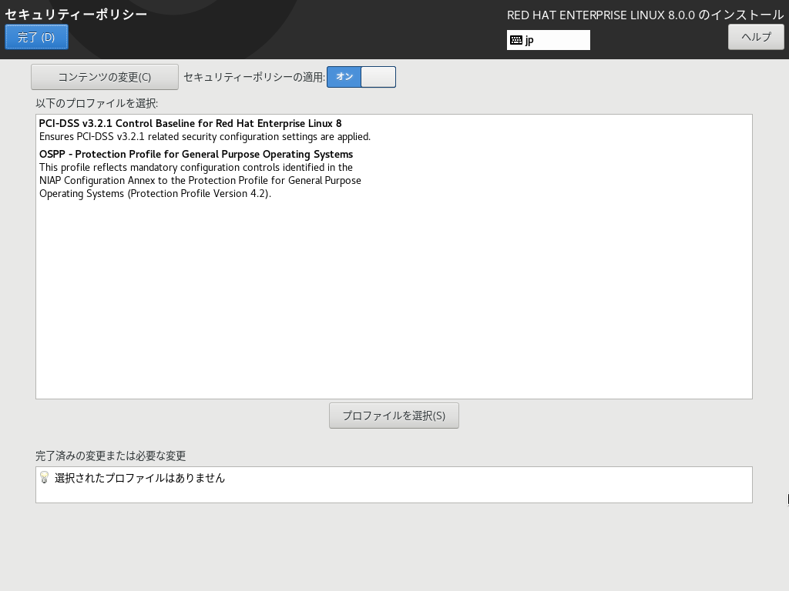
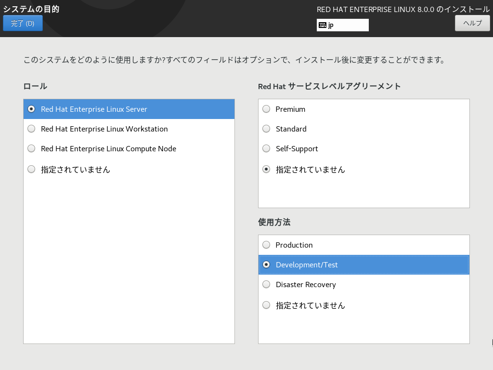
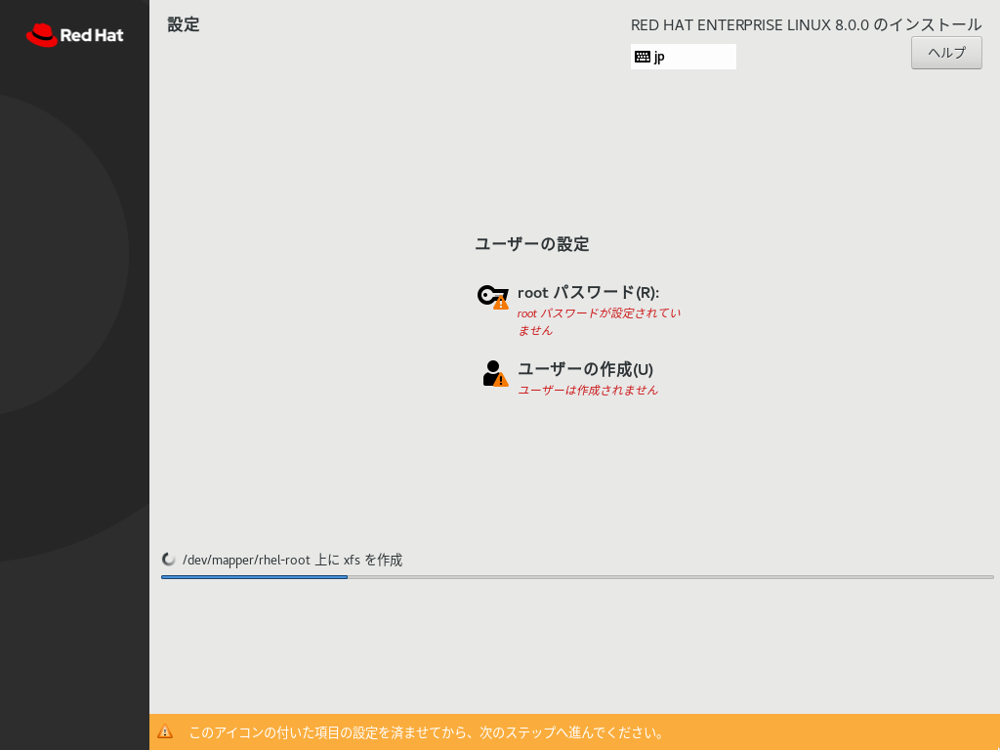

OSのインストール
本手順ではVirtualBoxにDVD ISOファイルからインストールを行う場合の手順になる
本手順は最低要件スペックのサーバを用意しサーバ用途として最低限のインストールをGUIで行う
1. インストール言語の選択
用意したメディアを入サーバを起動するとまず言語設定画面になる
ここでの言語はインストール処理に利用する言語、適した言語を選択

言語設定を行うと各種インストールの各種設定ページに移動する

2. インストールディスクのパーティション設定
こだわりがない場合は自動構成で問題なくLVMを作成してくれる

インストールするディスクの容量が50GB以上ある場合は注意が必要
自動構成パーティショニングの場合、50GB以上の領域があると50GB毎に勝手にパーティションを細分化してしまう
例）
/boot
/ --> 50GB
/home --> 残り容量
指定したい場合は「カスタム」を選択する
3. 時刻設定
OSで利用するシステム時刻の設定を行う
サーバの利用環境に合わせてゾーン情報を指定します
ここでは日本で利用しているので 「アジア/東京」 を選択、ネットワーク時刻同期サービス（NTP）の設定はインストール後に行うので、ここでは割愛
システムクロックはデフォルトでUTCを利用するような設定画面になっている
Linuxの時刻調整には「地域標準時(LOCAL)」と「協定世界時(UTC)」がある
選択地域の設定を変更する事で地域標準時にする事も可能
地域標準時(LOCAL)
UTC/GMTから取得した時刻にタイムゾーンの標準時を計算した時間UTC/GMT ± タイムゾーン
協定世界時(UTC)
原子時計により精密に時間が調整されている世界共通の標準時間
閏秒の調整も行われている
基本的にOSをただ利用している分にはほとんど互いの違いを意識することはないが、
再起動等によりシステム時刻がリセットされ、ハードウェア時刻から時刻計算するときや、アプリケーションがOS時刻を取得したい場合、タイムゾーンも考慮する必要があるなど地域標準時にするメリットがない
UTCはその点を考慮する必要がないため、UTCがデフォルト、推奨値になっている
4. ソフトウェアの選択
インストールタイプの選択
ここではサーバ用途の為「最低限のインストール」から必要なパッケージグループのみをインストールするように指定する
注意
既知のバグでグラフィカルインターフェース構成でインストールした場合、正常に起動しなくなる場合がある
5. セキュリティポリシー

Security Content Automation Protocol (SCAP) 標準で定義された制限および推奨事項 (コンプライアンスポリシー) に従ってインストールされたシステムを設定することができます。この機能はアドオンが提供するもので、これは Red Hat Enterprise Linux 7.2 以降デフォルトで有効になっています。有効になっていると、この機能の提供に必要なパッケージが自動でインストールされます。ただし、デフォルトでは強制されるポリシーがなく、具体的に設定しないとインストール中およびそれ以降にチェックは実行されません。
6. KDUMP
用途により有効／無効化する
7. ネットワークとホスト名
インストール完了後に別途設定する
8. システムの目的

用途に応じて選択する、デフォルトのままでも問題無し
9. インストールの開始
全てのチェックが正常に設定後インストールを行う

パッケージインストール時にrootパスワードを設定する
インストール完了後、再起動を促されるので再機動して完了となる
インストール関連のログは下記に出力されるため、必要により確認する
| logfile | value |
|---|---|
| /var/log/anaconda/* | install logs |